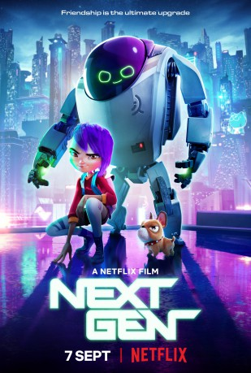

gesehen am 05.10.2018
gesehen am 05.10.2018Alternativ: Next Gen gesehen am 05.10.2018
 
 IMDB-Wertung: 6.6 / 10
IMDB-Wertung: 6.6 / 10  Metascore:
Metascore: 
Ein geheimer Roboter verwandelt das Leben eines einsamen Mädchens in ein aufregendes Abenteuer. Gemeinsam kämpfen sie gegen Bösewichte, fiese Roboter und andere Feinde.
Jahr: 2018
Dauer: 106 Minuten
FSK: 6
Land: China Studio: NetflixTonspuren: - , - , - , - , - ,
Untertitel: Deutsch, Englisch,
Auflösung: 1080p (1920x1080) Größe: 4997 MB
Genre: Action, Drama, Sci-Fi, Komödie, Abenteuer, Animation/Trick, Familie
Regisseur: Kevin R. Adams, Joe Ksander
Drehbuch: Kevin R. Adams, Joe Ksander, Wang Nima, Ryan W. Smith
Soundtrack: Samuel Jones, Alexis Marsh
Darsteller:
 John Krasinski als Project 77
John Krasinski als Project 77 Charlyne Yi als Mai
Charlyne Yi als Mai Jason Sudeikis als Justin Pin / Ares
Jason Sudeikis als Justin Pin / Ares Michael Peña als Momo
Michael Peña als Momo David Cross als Dr. Tanner Rice / Q-Bots
David Cross als Dr. Tanner Rice / Q-Bots David Acord als Additional Voices
David Acord als Additional Voices Holly Dorff als Additional Voices
Holly Dorff als Additional Voices Karen Huie als Additional Voices
Karen Huie als Additional Voices Jet Jurgensmeyer als Junior
Jet Jurgensmeyer als Junior Matthew Labyorteaux als Additional Voices
Matthew Labyorteaux als Additional Voices Hope Levy als Additional Voices
Hope Levy als Additional Voices Fred Tatasciore als Police Robots / Robot Podium / Announcer
Fred Tatasciore als Police Robots / Robot Podium / Announcer Matthew Wood als Additional Voices
Matthew Wood als Additional VoicesDatei: X:\HD-Anime\Mädchen und ihr Roboter, Das (2018, FSK, 1920x1080).mkv seit 07.09.2018
Festplatte: Gemischt-01+Anime
 Es gibt insgesamt 43 Filme in der Gruppe 'HD-Anime'
Es gibt insgesamt 43 Filme in der Gruppe 'HD-Anime'